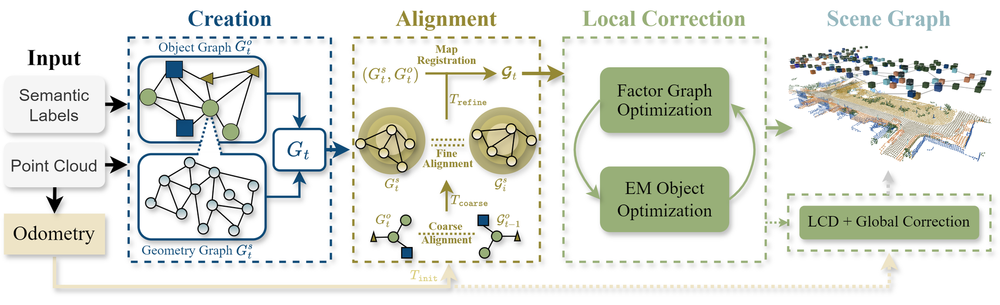
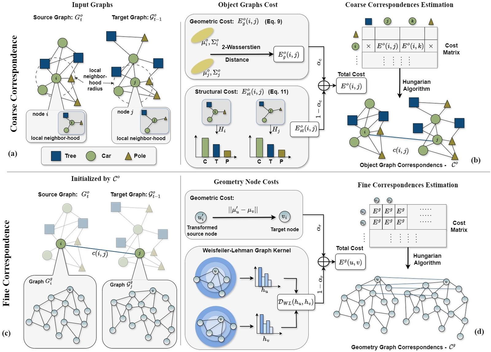
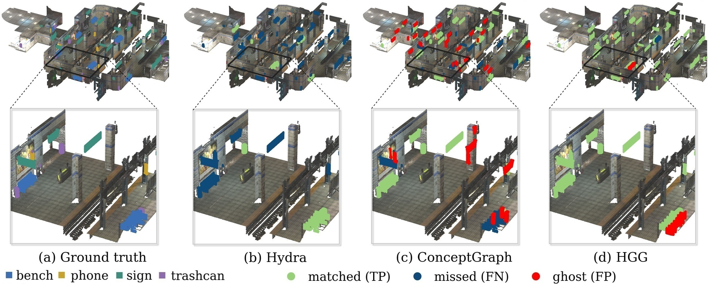
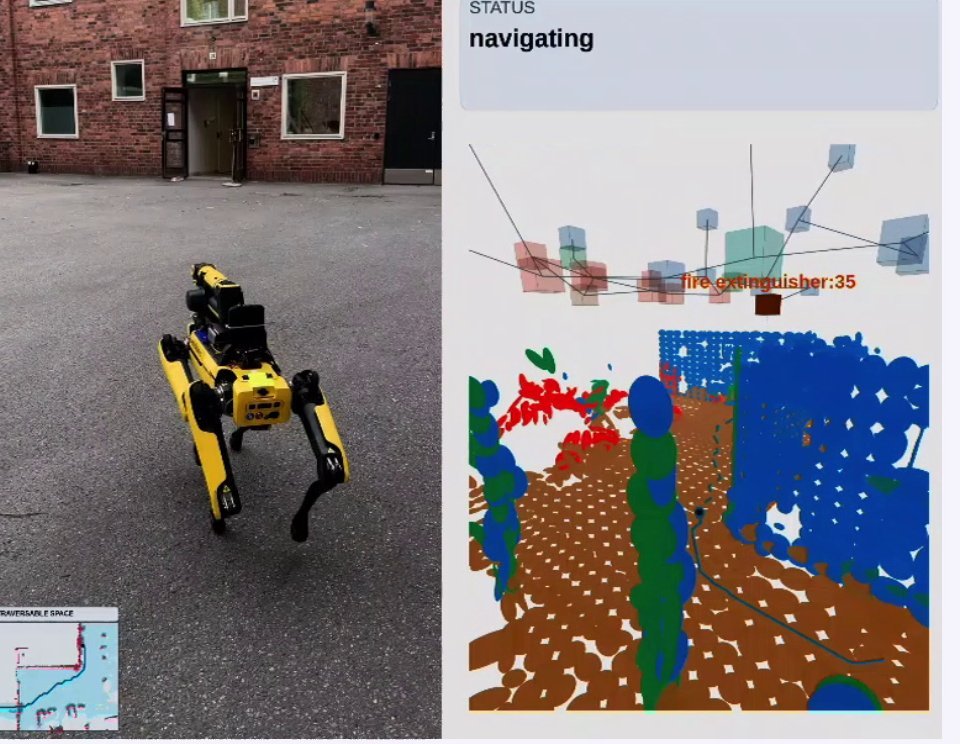

arXiv preprint, 2026
Five-minute overview: the problem, KITTI and in-house mapping at sensor rate, and language-grounded navigation on Spot.
A scene graph that is a posterior over graphs, and a real-time system that keeps it one through creation, alignment and correction.
3D scene graphs provide semantically rich and hierarchical representations for robot perception. However, existing systems do not maintain uncertainty as an explicit belief or propagate it through the operations that construct and refine the graph. We introduce the Probabilistic Scene Graph (PSG), a generalization of the conventional scene graph that represents a posterior over possible graphs, factorized into a discrete graph structure of entities, relations and semantic attributes, and continuous states that ground them spatially, with uncertainty maintained over both components. Geometry is carried directly by the nodes rather than selected from a separately constructed metric map, so a metric map, where needed, follows from the graph rather than preceding it.
We instantiate PSG's probabilistic spatial grounding with hierarchical graphs of Gaussians (HGG): each object primitive is represented by a full-covariance Gaussian under a Normal-Inverse-Wishart belief, and the same parametrization applied recursively within a node yields a geometry graph that resolves its surface at finer resolution. We then build a mapping pipeline that preserves these beliefs throughout graph construction and refinement: a purely graph-based coarse-to-fine alignment registers observations by comparing node beliefs, while a nested Expectation-Maximization and factor-graph optimization jointly refines poses, object parameters and internal geometry.
Across six datasets spanning indoor RGB-D, outdoor LiDAR and cross-modality deployment, HGG operates at sensor rate with near-constant memory and achieves state-of-the-art object accuracy and zero-shot graph alignment.
A robot never observes the true scene; it receives noisy, partial measurements. A conventional scene graph collapses them to a point estimate the moment a node is created, and every later operation on that node inherits the loss.
Association has no record of how little evidence stood behind a first view. Once drift displaces a node, a second view of the same object fails to match and is instantiated again.
When the trajectory is corrected, nodes that were fused as equals cannot be re-weighted: a single glimpse at range pulls the merged estimate as hard as an object resolved over many views.
A node built from a partial view is committed to the shape of that view. Later, better observations cannot outweigh it, so the extent never converges.
PSG defines the scene graph as a posterior P(S, θ | Z) over a symbolic structure S and continuous states θ. HGG instantiates the geometric belief hierarchically with the same primitive at every level.
The pair (μ, Σ) describes the physical object, not its uncertainty. The uncertainty lives in a conjugate Normal-Inverse-Wishart belief over that pair, whose pseudo-count κ is simply the number of measurements attributed to the node. An object glimpsed once at range stays uncertain in both position and extent until further views accumulate; an object seen from many angles contracts.
Covariances live on the manifold of symmetric positive-definite matrices, so every comparison, interpolation and refinement in the pipeline is carried out with operations that respect that geometry: 2-Wasserstein and affine-invariant Riemannian distances for matching, geodesic interpolation along edges, and residuals in the tangent space during optimization.
Given a semantic point cloud and odometry, HGG builds a local hierarchical graph per frame, aligns it to the global graph through coarse-to-fine graph alignment, and refines the result with nested optimization. The belief established at creation is carried through, never discarded.

Each frame is clustered into object instances. Every instance becomes a Gaussian node with κ set to its point count, and is recursively partitioned into a geometry graph expressed in the object frame. The graph, not a dense map, is the unit of measurement.
Object nodes are matched by a 2-Wasserstein cost plus a semantic-neighborhood histogram, registered with node and edge constraints, then refined on the geometry graphs with Weisfeiler-Lehman structural features. Matched nodes merge by exact conjugate update, weighted by evidence.
A factor graph jointly refines frame poses and object frames with residuals on Sym+(3); an EM step refines each object's internal geometry in its own frame. A Fisher-information analysis shows the split costs only a second-order loss in efficiency.

Six datasets: uHumans2 (indoor RGB-D), KITTI, KITTI-Carla and MCD (outdoor LiDAR), ScanNet-SG (graph alignment), and two in-house LiDAR-camera sequences including an indoor-to-outdoor transition.
| Dataset | Sensor | Best baseline F1 | HGG F1 | HGG recall | HGG time |
|---|---|---|---|---|---|
| uHumans2 Apartment | RGB-D | 0.38 Kimera | 0.86 | 0.79 | 29.3 ms |
| uHumans2 Office | RGB-D | 0.36 Kimera | 0.83 | 0.79 | 28.5 ms |
| uHumans2 Subway | RGB-D | 0.50 Hydra | 0.88 | 0.97 | 30.6 ms |
| In-house-01 | LiDAR + RGB | 0.60 Hydra | 0.94 | 0.88 | 43.6 ms |
| In-house-02 (indoor→outdoor) | LiDAR + RGB | 0.43 Kimera | 0.88 | 0.92 | 50.6 ms |
| KITTI-Carla | LiDAR | 0.63 SG-SLAM | 0.88 | 0.89 | 13.4 ms |
| KITTI | LiDAR | 0.67 SG-SLAM | 0.91 | 0.93 | 26.1 ms |
| MCD-KTH | LiDAR | 0.54 SG-SLAM | 0.80 | 0.79 | 14.4 ms |
| MCD-NTU | LiDAR | 0.56 SG-SLAM | 0.82 | 0.84 | 20.1 ms |
Indoor baselines (Kimera, Hydra, ConceptGraphs) share the same Kimera-VIO odometry as HGG; outdoor systems share KISS-ICP. Thing classes only, following the SemanticKITTI split. Full tables, including ground-truth-pose and object-SLAM comparisons, are in the paper.

Retrieval and navigation run directly on the probabilistic scene graph, with no dense metric map built first.
Fifteen queries per uHumans2 scene, spanning unique-instance, spatial-relational (“the chair next to the computer”) and instance-disambiguation cases, each with exactly one correct instance. Both systems use the same CLIP checkpoint, so the difference is the map. Scoring relations against object extents rather than centroids is what orders candidates correctly at rank one.
| Scene | ConceptGraphs R@1 | HGG R@1 | HGG R@3 |
|---|---|---|---|
| Apartment | 0.35 | 0.65 | 0.94 |
| Office | 0.20 | 0.47 | 0.93 |
| Subway | 0.07 | 0.43 | 0.93 |
HGG runs onboard a Boston Dynamics Spot carrying a Manifold Odin 1 (solid-state LiDAR with a 120° field of view, RGB camera, built-in odometry). Three sequential language commands, two of them relational, take the robot from an indoor corridor to an outdoor bench; a task succeeds when Spot stops within 1.0 m of the target, and all three succeed.
Traversable space is read from the geometry graphs, while object extents, evidence counts and relational edges handle target identification, disambiguation and goal placement. The video above shows the runs.
